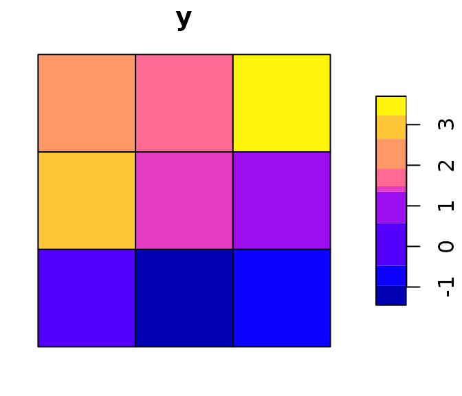

vignettes/spatial-weights-matrix.Rmd
spatial-weights-matrix.RmdThis vignette explains what a spatial weights matrix is, how to create one using geostan, and how to edit one manually when needed.
Beyond the visual examination of maps, spatial data analysis requires a way of representing spatial contiguity or spatial order. This is usually done by storing a list of which areas are neighbors to one another. That is, for each observation, we will have a list identifying the neighboring areas. We store this information in an N-by-N matrix, which is known as an adjacency matrix, spatial connectivity matrix, or spatial weights matrix.
Getting this information into convenient format allows us to create summary statistics that describe spatial features of the data. Just like we can measure the degree of correlation between two variables (and create scatter plots to visualize it), we can measure the degree to which a variable is correlated with its own values over space. This is known as spatial autocorrelation (SA), or map pattern.
Our spatial weights matrix is going to enable us to measure and to visualize SA, and this means we have to be fairly thoughtful about how we create this matrix. However, there are only a small number of methods that are used very often, and simple techniques are often sufficient if not best.
To get started, load the geostan and sf packages:
We may say that two areas are contiguous, or neighbors of one another, if they share a stretch of border. This is known as the ‘rook’ contiguity condition. Alternatively, we could allow for any shared point to count as a shared border; that is known as the ‘queen’ contiguity condition. (This is an analogy to chess moves.)
An example will illustrate the difference. Here is a simple grid:
# create a regular grid
row = col = 3
sfc = st_sfc(st_polygon(list(rbind(c(0,0), c(col,0), c(col,row), c(0,0)))))
grid <- st_make_grid(sfc, cellsize = 1, square = TRUE)
grid <- st_as_sf(grid)
ogpar <- par(mar = rep(0, 4))
plot( grid )
par(ogpar)Using the rook criteria, we would say that the center square has four neighbors, one on every side. If we use the queen criteria, then we also add the corner squares, so it will have eight neighbors.
To create the spatial adjacency matrix for the grid, we pass it to the geostan::shape2mat function:
A <- shape2mat(grid, method = 'rook')
#> Contiguity condition: rook
#> Number of neighbors per unit, summary:
#> Min. 1st Qu. Median Mean 3rd Qu. Max.
#> 2.000 2.000 3.000 2.667 3.000 4.000
#>
#> Spatial weights, summary:
#> Min. 1st Qu. Median Mean 3rd Qu. Max.
#> 1 1 1 1 1 1Every spatial unit in our data will have its own row in the matrix; the first row in the matrix corresponds to the first row in the data. If the first observation is a neighbor to, say, the third one, then the element in the third column of the first row will be one; if they are not neighbors, the element will be zero.
The object A is a sparse matrix - that means that you can treat it like a matrix in calculations, but it is more efficient than a standard matrix. You can learn more by reading up on the Matrix package. (Sometimes you will need to use methods provided by the Matrix package; for example, instead of colSums(A) you may need to use Matrix::colSums(A).)
The geostan::n_nbs function will tell us how many neighbors each area has (according to the adjacency matrix):
n_nbs(A)
#> [1] 2 3 2 3 4 3 2 3 2
summary( n_nbs(A) )
#> Min. 1st Qu. Median Mean 3rd Qu. Max.
#> 2.000 2.000 3.000 2.667 3.000 4.000And for the queen condition:
Aq <- shape2mat(grid, method = 'queen')
#> Contiguity condition: queen
#> Number of neighbors per unit, summary:
#> Min. 1st Qu. Median Mean 3rd Qu. Max.
#> 3.000 3.000 5.000 4.444 5.000 8.000
#>
#> Spatial weights, summary:
#> Min. 1st Qu. Median Mean 3rd Qu. Max.
#> 1 1 1 1 1 1
n_nbs(Aq)
#> [1] 3 5 3 5 8 5 3 5 3Now the minimum number is three and the maximum, for the center square, is eight.
It is always a good idea to visualize your connectivity matrix. These matrices are also graph structures - each area in the grid is a node and the connections are called edges.
The geostan::edges function converts a matrix to a data.frame which lists each pair of connected nodes. If we also provide spatial = grid, then it will return a simple features object that we can plot.
This code gets those connections as a simple features object and lays it over the grid:
# geometry of the grid
geom <- st_geometry(grid)
# geometry of the graph
edges <- edges(A, shape = grid)
graph <- st_geometry(edges)
# plot overlay
ogpar <- par(mar = rep(0, 4))
plot(geom, lwd = .1)
plot(graph, add = TRUE, type = 'b')
par(ogpar)The units with the lowest number of neighbors are the corner squares (they have two neighbors each). The most connected unit is in the center, with 4 neighbors.
Now here is what the grid looks like using the queen contiguity condition:
Aq <- shape2mat(grid, method = 'queen')
#> Contiguity condition: queen
#> Number of neighbors per unit, summary:
#> Min. 1st Qu. Median Mean 3rd Qu. Max.
#> 3.000 3.000 5.000 4.444 5.000 8.000
#>
#> Spatial weights, summary:
#> Min. 1st Qu. Median Mean 3rd Qu. Max.
#> 1 1 1 1 1 1
E <- edges(Aq, shape = grid)
graph <- st_geometry(E)
ogpar <- par(mar = rep(0, 4))
plot(geom, lwd = .1)
plot(graph, add = TRUE, type = 'b')
par(ogpar)The queen and rook criteria are common when working with areal data (polygons). Another method, which also works for point data, is K nearest neighbors. If you use k = 4, then for each spatial unit, this method will identify the four nearest observations and classify them as neighbors to the first.
A4 <- shape2mat(grid, method = 'knn', k = 4)
#> Warning in spdep::knearneigh(coords, k = k, longlat = longlat): k greater than
#> one-third of the number of data points
#> Contiguity condition: knn, k=4
#> Number of neighbors per unit, summary:
#> Min. 1st Qu. Median Mean 3rd Qu. Max.
#> 4 4 4 4 4 4
#>
#> Spatial weights, summary:
#> Min. 1st Qu. Median Mean 3rd Qu. Max.
#> 1 1 1 1 1 1
n_nbs(A4)
#> [1] 4 4 4 4 4 4 4 4 4When applied to polygons, the function will first convert each polygon to a single point - its centroid - and then calculate pairwise distances between those points.
Thus far, all of the matrices have been binary - the elements are all zeroes and ones. A common alternative is to row-standardize this matrix. In that case, if the first spatial unit has four neighbors, then each of those ones will be converted to 1/4 or 0.25 - they will sum to one. If the second row has five neighbors, then each one will be converted to 0.2.
You can use the geostan::row_standardize function:
W <- row_standardize(A)
print( W )
#> 9 x 9 sparse Matrix of class "dgCMatrix"
#>
#> [1,] . 0.50 . 0.50 . . . . .
#> [2,] 0.3333333 . 0.3333333 . 0.3333333 . . . .
#> [3,] . 0.50 . . . 0.50 . . .
#> [4,] 0.3333333 . . . 0.3333333 . 0.3333333 . .
#> [5,] . 0.25 . 0.25 . 0.25 . 0.25 .
#> [6,] . . 0.3333333 . 0.3333333 . . . 0.3333333
#> [7,] . . . 0.50 . . . 0.50 .
#> [8,] . . . . 0.3333333 . 0.3333333 . 0.3333333
#> [9,] . . . . . 0.50 . 0.50 .Or you can use style = 'W' with shape2mat:
W <- shape2mat(grid, 'W', method = 'rook')
#> Contiguity condition: rook
#> Number of neighbors per unit, summary:
#> Min. 1st Qu. Median Mean 3rd Qu. Max.
#> 2.000 2.000 3.000 2.667 3.000 4.000
#>
#> Spatial weights, summary:
#> Min. 1st Qu. Median Mean 3rd Qu. Max.
#> 0.2500 0.3333 0.3333 0.3750 0.5000 0.5000
print( W )
#> 9 x 9 sparse Matrix of class "dgCMatrix"
#>
#> [1,] . 0.50 . 0.50 . . . . .
#> [2,] 0.3333333 . 0.3333333 . 0.3333333 . . . .
#> [3,] . 0.50 . . . 0.50 . . .
#> [4,] 0.3333333 . . . 0.3333333 . 0.3333333 . .
#> [5,] . 0.25 . 0.25 . 0.25 . 0.25 .
#> [6,] . . 0.3333333 . 0.3333333 . . . 0.3333333
#> [7,] . . . 0.50 . . . 0.50 .
#> [8,] . . . . 0.3333333 . 0.3333333 . 0.3333333
#> [9,] . . . . . 0.50 . 0.50 .You should always check your adjacency matrix. Why? Because you may find something unexpected. There may be slight imperfections in the spatial boundary data, or actual gaps between nearby areas, that cause ‘neighboring’ areas to be missed. Or, strange shapes may cause two substantively ‘non-neighboring’ areas to be joined as neighbors.
To edit the matrix, you need to know the index position of the areas of interest (that is, which row corresponds to each polygon):
# row number, index position
Id <- 1:nrow(grid)
# centroid coordinates (x, y)
centers <- st_centroid(grid)
coords <- st_geometry(centers)
xy <- matrix(unlist(coords), byrow = T, ncol = 2)
# map Ids
ogpar <- par(mar = rep(0, 4))
plot(geom, lwd = .15)
text(x = xy[,1], y = xy[,2],
label = Id)
par(ogpar) (You could adjust that code to plot the number of neighbors each polygon has, which is another useful way to visualize connectivity.)
If, for whatever reason, we wanted to connect the second polygon to the fourth, we would need to change the elements of the fourth column in the second row, A[2, 4], and the second column in the fourth row, A[4, 2]:
A[2, 4] <- A[4, 2] <- TRUE # 1If we wanted to remove the connection between the first and second polygon we would replace their ones with zeroes:
A[1, 2] <- A[2, 1] <- FALSE # 0Notice that the above operations apply when the matrix is binary and symmetric. KNN is not symmetric. If you want or need to use row-standardization, be sure to complete your edits using the binary matrix and then row standardize it.
The matrix allows us to calculate the spatial lag of any observation - that is, a weighted sum of the neighboring values.
We can illustrate with some data:
# draw data from spatial autoregressive model
set.seed(101010)
y <- sim_sar(w = W, rho = .8)
print( y )
#> [1] -0.1618155 -1.1585015 -0.7857615 3.0395813 1.3792529 1.3173097 2.2556468
#> [8] 1.5829022 3.4143133
ogpar <- par(mar = rep(0, 4))
grid$y <- y
plot(grid['y'])
par(ogpar)To calculate the spatial lag for the first unit, we would first get the weights from the first row of the matrix A:
A <- shape2mat(grid, method = 'rook', quiet = TRUE)
w1 = A[1,]
print( w1 )
#> [1] FALSE TRUE FALSE TRUE FALSE FALSE FALSE FALSE FALSE(Notice: R treats logical values the same as zeroes and ones.)
To find the spatially lagged value of y[1], we first multiple all y values by the appropriate weights, then sum:
w1_y <- w1 * y
sum( w1_y )
#> [1] 1.88108We can do this more quicly as a matrix-vector product:
w1 %*% y
#> [,1]
#> [1,] 1.88108To get the spatial lag of each y value, we do the same for every row:
A %*% y
#> 9 x 1 Matrix of class "dgeMatrix"
#> [,1]
#> [1,] 1.8810798
#> [2,] 0.4316758
#> [3,] 0.1588082
#> [4,] 3.4730841
#> [5,] 4.7812917
#> [6,] 4.0078046
#> [7,] 4.6224835
#> [8,] 7.0492129
#> [9,] 2.9002119To get the average surrounding value, we would use the row-standardized matrix:
W %*% y
#> 9 x 1 Matrix of class "dgeMatrix"
#> [,1]
#> [1,] 0.94053990
#> [2,] 0.14389194
#> [3,] 0.07940409
#> [4,] 1.15769471
#> [5,] 1.19532293
#> [6,] 1.33593488
#> [7,] 2.31124176
#> [8,] 2.34973765
#> [9,] 1.45010595Spatial connectivity matrices and spatial lags are used in many geostan functions, including for exploratory spatial data analysis (ESDA) and spatial-statistical modeling. For more, you can see the ESDA vignette (find it by running browseVignettes('geostan')).
dev.off()
#> null device
#> 1